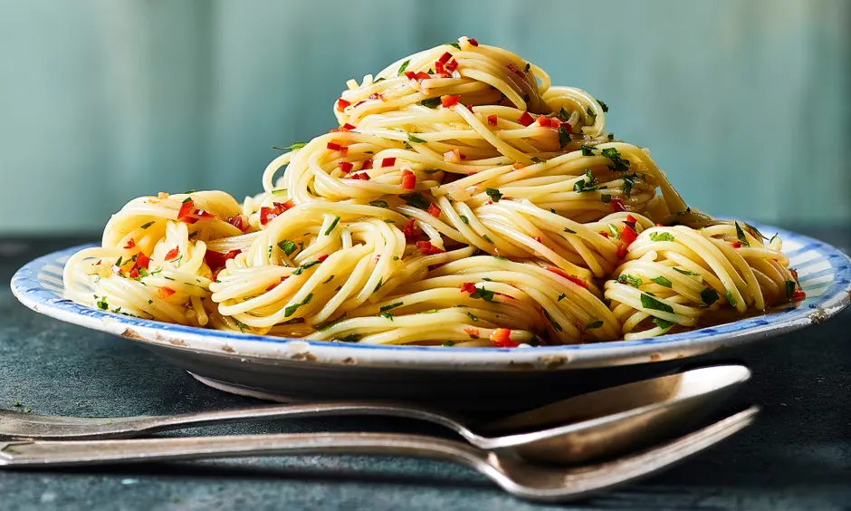

Aio e Oio

Description
A quick and easy pasta dish, originally from Napoli and modified for this roman variation.
Ingredients
- Spagetti
- Curly Leaf Parsley
- Red Chilli Pepper
- Garlic
- Olive Oil
Method
- Bring a pot of heavily salted water to the boil, add the pasta and boil until cooked.
- Very thinly slice the garlic, and add to a hot frying pan along with the olive oil.
- Finely chop the chilli and to the frying pan once the garlic is golden until fragrant.
- Add the parsley and cook for a few seconds, then add the pasta straight from the boiling pan.
- Mix until combined, then serve.